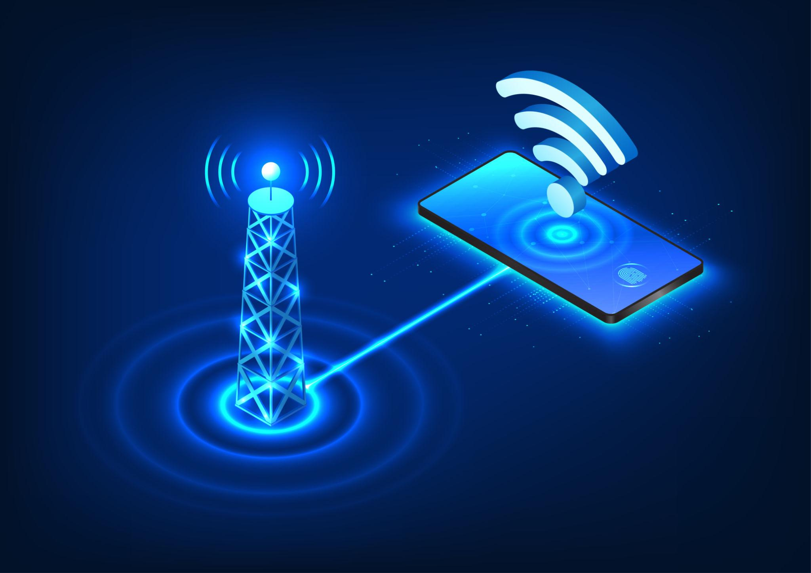

A história dessas ondas começa no século XIX com a unificação da eletricidade e do magnetismo. O rádio e a televisão evoluíram a partir da telegrafia sem fio do final dos anos 1800. A transmissão de imagens (televisão) começou a ser testada experimentalmente nas décadas de 1920 e 1930, popularizando-se globalmente após a Segunda Guerra Mundial.
Já a telefonia celular nasceu da evolução das redes de rádio móvel bidirecional (como rádios de polícia). A primeira chamada comercial de celular ocorreu em 1973 (pela Motorola), e a tecnologia evoluiu rapidamente através de gerações (1G analógico até o atual 5G), exigindo faixas de frequência cada vez mais complexas para transmitir dados em alta velocidade.
James Clerk Maxwell (1831–1879): Físico e matemático escocês. Ele formulou as famosas Equações de Maxwell, provando matematicamente que a luz e as ondas eletromagnéticas viajam pelo espaço na velocidade da luz, unificando eletricidade, magnetismo e luz.
Heinrich Hertz (1857–1894): Físico alemão. Foi o primeiro a produzir e detectar ondas eletromagnéticas em laboratório (em 1887), comprovando empiricamente a teoria de Maxwell. Em sua homenagem, a unidade de medida de frequência é o Hertz (Hz).
Guglielmo Marconi (1874–1937): Inventor italiano que desenvolveu o primeiro sistema prático de telegrafia sem fio, sendo frequentemente lembrado como um dos pais das comunicações de rádio que sustentam a TV e o celular modernos.

Características das ondas de TV
Características das ondas de celular